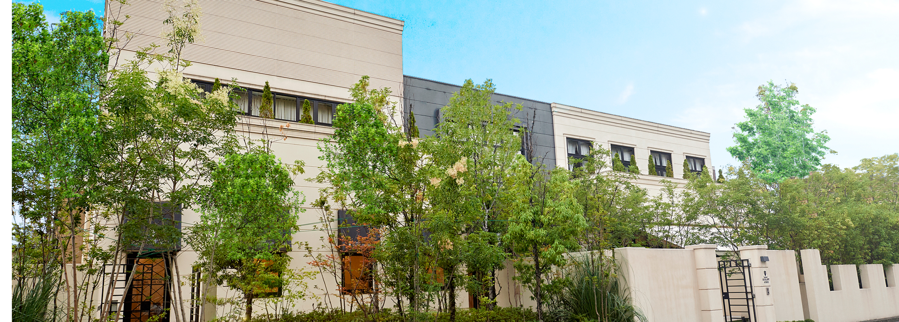
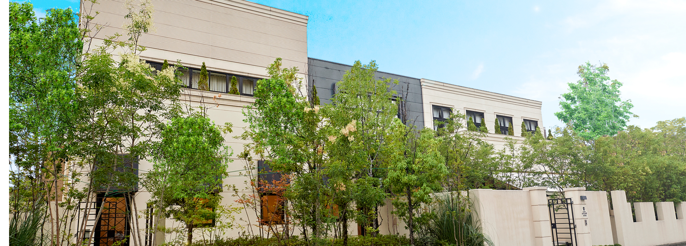

会場案内
会場について
The clab of EXCELLENT AVENUE
大分駅の近くにあるゲストハウスです。1日一組のみ行っており、会場内で関係者以外と接触する可能性はほとんどありません。
会場地図
交通手段
●最寄りの駅からのアクセス
大分駅/JR日豊本線大分駅より徒歩10分
●お車でのアクセス
高速道路大分ICを下車し、椎迫交差点を左折（3分）そのまま大道バイパスを直進し、千代町4丁目を右折（10分）そのまま直進し（一旦停止にご注意下さい）すると左手に白い建物が見えます。
The clab of EXCELLENT AVENUE
大分駅の近くにあるゲストハウスです。1日一組のみ行っており、会場内で関係者以外と接触する可能性はほとんどありません。
大分駅/JR日豊本線大分駅より徒歩10分
高速道路大分ICを下車し、椎迫交差点を左折（3分）そのまま大道バイパスを直進し、千代町4丁目を右折（10分）そのまま直進し（一旦停止にご注意下さい）すると左手に白い建物が見えます。